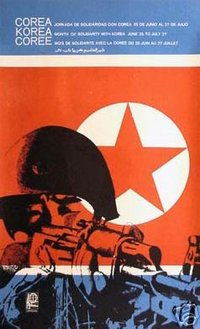

Month of Solidarity
From The Giant: The Definitive Obey Giant Site
The Month of Solidarity, also known as the Month of Common Struggle against Imperialism and of Support to the Cause of the Korean People was established in 1960 as the period of time from June 25 until July 27.
From the Workers' Daily Internet Edition:
The Korean War (1950-1953)
On June 25, 1950, after a whole series of incursions and military provocation against the DPRK, the South Korean forces, placed under US command, crossed the 38th parallel, which separates the north from the south, with an objective to "disperse and disarm North Korea’s People’s Army" in order to "take Pyongyang in three days" (to cite Syngman Rhee, "President" of the South Korean puppet government at the end of 1949).
But, the events took an unexpected turn for the Pentagon’s strategists and their South Korean henchmen: the Koreans gave a massive support to their People’s Army to defend their freedom and independence, and the invaders were thrown out of the country and chased all the way to Seoul.
On the very day of the aggression, which they themselves had plotted out, the USA referred the matter to the Security Council of the United Nations, and, in the absence of the USSR and China, regardless of the facts, the north was designated as the "aggressor."
Three hours after the meeting of the Security Council, which called for a "cease-fire," the US forces – what a coincidence – were present and intervened in all combat zones.
As the United Nations at the time was mostly pro-American, the US obtained a shameful support of the international organisation, in violation of the basic principles of the Charter of the United Nations, in order to create an illusion that its military intervention was legitimate.
American-Korean troops encountered a series of setbacks, and the US decided to mobilise huge forces, including mercenaries from 15 countries, to try to bring the Koreans to their knees. They did not hesitate to use terrible chemical and biological weapons, and even thought of using nuclear weapons, provoking a wave of indignation throughout the world.
During all these terrible years for the Korean nation (the death toll was more than two million and the country was completely devastated), its resistance did not weaken, supported by an immense international movement of solidarity, demanding the withdrawal of the American aggressor, peace in Korea, and the right of the entire Korean nation to self-determination.
Defeats on the battlefield and political isolation on the international level forced the US to abandon its ambitions and accept defeat by signing, on July 27, 153, an "Armistice Agreement," which put an end to the war.
To pay tribute to the heroic struggle of Koreans and their victory over the most important imperialistic power, which was a significant example for the struggle of people for their emancipation, the anti-imperialist forces of the world proposed in 1960 to turn the period of June 25 – July 27 into a Month of Common Struggle against Imperialism and of Support to the Cause of the Korean People.
The International Liaison Committee for Reunification and Peace in Korea (CILRECO) decided in the very first days of its existence to turn this Month of Solidarity every year into a period of intensive activity of support for the cause of the Korean people by ensuring a convergence of initiatives of all progressive forces during this period of particular importance for the expression of the people’s demand for the independent and peaceful reunification of Korea.
From Globalsecurity.org:
International Solidarity with Korean People
Pyongyang, December 22 (KCNA) -- The international support to and solidarity with the Korean people in their just cause has been strengthened to an extent hither to unparalleled this year. According to data available, at least 1,730 solidarity functions have taken place this year in the DPRK and over 80 foreign countries under the sponsorship of international democratic organizations and organizations for peace against war and foreign organizations for friendship and solidarity with the Korean people.
An international conference for ensuring peace on the Korean peninsula was held in Pyongyang in July under the co-sponsorship of international democratic organizations and the Korean Committee for Solidarity with the World People.
The chairman of the International Association of Democratic Lawyers, the secretary general of the Afro-Asian People's Solidarity Organization, the executive secretary of the World Peace Council, the chairman of the World Federation of Democratic Youth, the chairwoman of the Women's International Democratic Federation and other delegates in their speeches expressed the belief that the Korean people and army under the Songun leadership of leader Kim Jong Il would emerge victorious in the present confrontation with the United States as they did in the last Korean war.
A resolution of the international conference and letters to the UN secretary general and the U.S. Congress were adopted there.
The Pyongyang International War Crimes Tribunal was held within the framework of the international conference. Laid before the tribunal by a joint international investigation group was an indictment which classified into 13 major categories the crimes committed by the United States on the Korean peninsula over the past one century or more such as the provocation of the Korean war, massacre of civilians in the wartime, barbarities of chemical and germ warfare, human right abuses in south Korea and nuclear crimes. And a stern judgement was passed on all the reactionary and inhuman policies and crimes of the U.S.
The participants in the international conference staged a solidarity demonstration and held a solidarity rally, at which they unanimously adopted the Pyongyang manifesto of international democratic organizations and organizations for friendship and solidarity with the Korean people calling upon the world peaceloving people to wage an extensive protest movement against the U.S. hard-line policy to stifle the DPRK.
In September, many delegates of foreign organizations and figures visiting the DPRK held a joint meeting of organizations for friendship and solidarity with the Korean people.
Messages and letters of solidarity were sent to Kim Jong Il on every occasion such as the 3rd anniversary of the June 15 North-South Joint Declaration and the June 25-July 27 month of anti-U.S. joint struggle by international organizations, organizations for peace against war and foreign organizations for friendship and solidarity with the Korean people, political and public figures and people of various social strata. And statements were published and rallies, demonstrations, international meetings, seminars, photo exhibitions, film shows and other solidarity functions were held by them.
A meeting of the executive committee of the World Peace Council held in Greece in November issued a communique supporting the Korean people in their just cause and a joint statement on the peace and reunification of the Korean peninsula in the name of international organizations and peace organizations of different countries.
In 1968, OSPAAAL, the Organization of Solidarity with the People of Asia, Africa and Latin America, produced a propaganda expressing Cuban support for North Korea during the Month of Solidarity. This poster, referred to as OSPAAAL-133B, was an offset lithograph measuring 33 by 53 centimeters. It is notable as it served as the model of Shepard Fairey's 1998 print Korean Soldier.
|  |
{kind=link}
{kind=link}
© Copyright |
|---|
| This page contains an image or images of drawings, paintings, photographs, prints, or other two-dimensional works of art, for which the copyright is presumably owned by either the artist who produced the image, the person who commissioned the work, or the heirs thereof. It is believed that the use of low-resolution images of works of art for critical commentary on the work in question, the artistic genre or technique of the work of art, or the school to which the artist belongs on the English-language website thegiant.org, hosted on servers in the United States, qualifies as fair use under United States copyright law. |